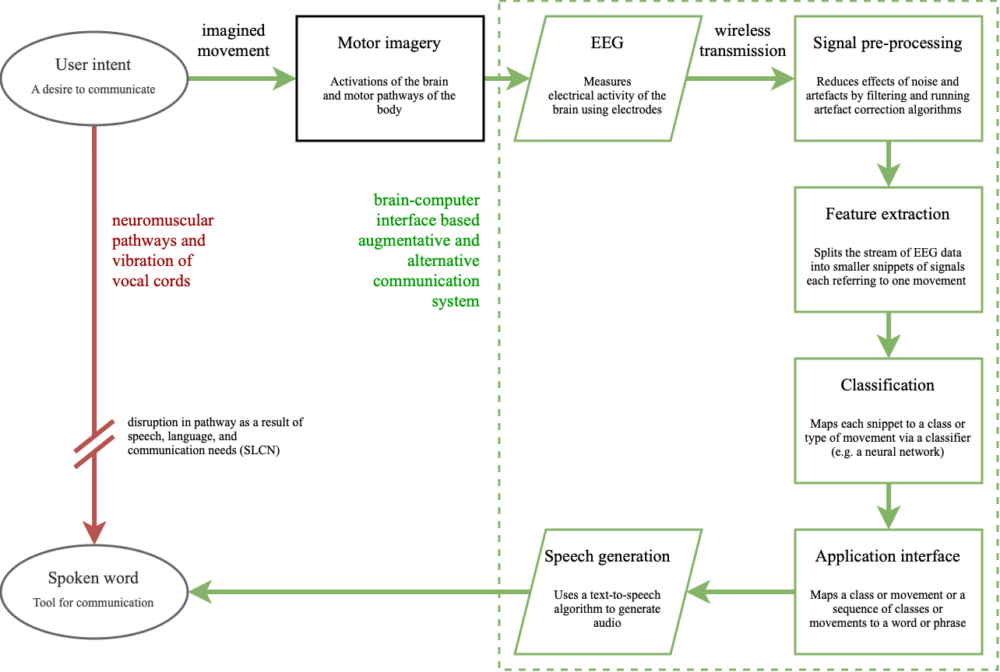

Prospects of brain-computer interfaces in communication for disabled children
Tahmid Azam (ta549@cam.ac.uk), May 2022
All figures, except for Figure 1, Figure 3, Figure 4, Figure 5 and Figure 6 were either programmatically generated using MATLAB and EEGLAB, created in Adobe Photoshop, or plotted in Microsoft Excel for this study. All scripts and functions for both the generation of figures and the research are original and were written for this study. The scripts, functions, interview transcript, figures and the processed dataset can be found in the study’s repository.
This project was presented on February 3rd, 2023, at Magdalen College School, Oxford at the Waynflete Studies Evening. Content from slides displayed in the presentation are included below in addition to project content.
This project is dedicated to my brother, Tahsin.
Abstract
Communication is a pillar of societal interaction for humans, pivotal from an early age. An incapacity to communicate is a universal obstruction to a child’s social and emotional development. This project aims to explore the impacts of speech, language, and communication needs, and how an augmentative and alternative communication system, specifically a brain-computer interface, can lessen them. Consumer electroencephalography systems for recording electrical activity in the brain are becoming more affordable. Additionally, the number of large datasets available is increasing, enabling neural networks to become a prospective option for motor imagery classification. Moreover, the high mobile computing performance and power efficiency of today’s devices can host these neural network classifiers. Both brain imaging and classification are integral to the workings of a brain-computer interface. The results of this project find that a unidirectional, long short-term memory, recurrent neural network can classify left- and right- hand imageries to an accuracy of 91.95%, demonstrating a high level of capability.
Introduction
Speech, language, and communication needs (SLCN) describe an individual for whom spoken language is insufficient for supporting conversation and peer interaction [1]. SLCN can arise from aphonia, verbal dyspraxia, learning disabilities like autism spectrum disorder, congenital conditions such as Down’s syndrome, and cancers or injury to the head or neck [2]. A population study found that at school entry, 2 out of 30 children will experience SLCN severe enough to affect development and academic progress [3]. In addition, more primary school children have SLCN than any other type of special educational need [4]. The capacity for communication is the foundation for independence and participation in society [5]; it is integral to social, emotional and educational development [6] in addition to one’s sense of self and cultural identity [5-1]. To mitigate SLCN, schools often employ differentiated curriculums and timetables that provide more focused teaching but reduce social involvement. Limiting the time an individual has with their peers can result in isolation, alienation, and inclusion issues in the classroom [1-1]. These effects of SLCN carry into later life: studies demonstrate that SLCN is associated with poor literacy, mental health and employment outcomes [7]. Figure 1 reveals the prevalence of SLCN throughout life and emphasises its dominance over early life.
Augmentative and alternative communication (AAC) systems attempt to break down the barriers constructed by SLCN. AAC strategies are diverse, from the low-tech solutions of sign language and display boards to high-tech electronic systems relying on speech generation [8]. There are a variety of these high-tech applications, from touchscreens and keyboards to those that use eye-tracking and breath activation [8-1], summarised in Slide 1.
To gain an impression of the experience of current AAC systems, I conducted an interview for this study [9] with the mother of Amos, a 9-year-old child diagnosed with Down’s Syndrome and developmental verbal dyspraxia (DVD). Down’s Syndrome is a genetic condition involving the trisomy of chromosome 21 [10]. Verbal dyspraxia involves an impairment of speaking as a result of difficulties in muscle coordination [11]. Amos communicates daily with Makaton sign language, which is a symbol and sign set [12]; however, this method has become inadequate in recent years as his emotional and educational needs have grown complex. Sign language has been applicable for communication within Amos’ family but as interaction extends to his peers at his school, it becomes less effective as many are unfamiliar with sign language. To support his communication further, he utilises TouchChat, an AAC application for tablets, which uses a matrix of on-screen buttons and a speech generation function, enabling conversation with those around him. This method provides a great deal of convenience but also serves as a distraction due to the additional functions of the tablet. Despite the portable form factor, the tablet needs to be in-hand and carried everywhere. Without his AAC, Amos is little understood and often underestimated. The communication gap between him and his peers widens, ultimately leading to feelings of frustration.

In the context of AAC, the brain-computer interface (BCI) allows for control of a speech-generating device by modulating one’s brain signals [8-2], providing a universal and non-muscular channel for communication [13]. As a result, they are undetectable in body language and require no peer training, which makes for a more seamless experience for children like Amos. The green channel in Figure 2 demonstrates how the neuromuscular coordination of vocal cords (the red channel) is bypassed by a BCI AAC system (the green channel). The process begins with the intent of the user, which triggers a cascade of complex processes involving the activation of many areas of the brain and the motor pathways of the nervous system [14]. These activations, also called motor imagery, are observed via electroencephalography (EEG), a method of measuring the electrical activity in the brain [15]. The BCI then picks out the relevant streams of intention amidst the sea of electrophysiological activity by pre-processing the signal, extracting features, and finally classifying them. Feature extraction splits the stream into salient snippets of signals. These snippets, or epochs, are mapped into outputs via classification, which finally control the speech-generating device [8-3]. BCIs continuously read brain activity, and feature extraction, signal processing and classification all must occur in real-time. Currently, BCIs are used as a last resort for AAC systems [14-1]. They are common in patients with locked-in syndrome (a state describing a person who is cognitively intact but paralysed, unable to perform voluntary movement [14-2]). Amyotrophic lateral sclerosis is an example of a locked-in condition, where initial muscle atrophy develops to a complete loss of voluntary movement [8-4]. Life support systems such as artificial respiration and artificial nutrition can prolong life expectancy, but the loss of motor pathways inhibits all forms of communication. The BCI becomes a locked-in human’s only form of interaction with the wider world. Today’s brain-computer interfaces are slow and unreliable [13-1], limiting their ability to support a wider range of needs. This project aims to challenge these limitations.
Classification is the crux of BCIs: it is the process by which brain activity is sorted into classes, for example left- or right-hand. Statistical classifiers, support vector machines, neural networks and nonlinear Bayesian classifiers [8-5] are examples of algorithms that map brain activity to classes. Neural networks are excellent at pattern recognition; their method of learning from example is akin to the workings of the human brain. In BCIs, they are applicable as the defining patterns for different motor imageries are found deep in the rhythm of multiple electrodes and behind walls of signal noise and artefacts [13-2][16][17]. Their potential is growing as large datasets are becoming available and mobile computing performance and power efficiency are improving [18]. In this project, a neural network is trained from a dataset of EEG recordings, [19], to classify left- and right-hand imagery and then tested to assess its effectiveness. Slide 2 summarises the components of BCI-based communication.
Electroencephalography
Electroencephalography measures the electrical activity of the brain. When neurones transmit information between each other, current dipoles are formed by simultaneous postsynaptic potentials [20]. These potentials are measured by electrodes placed on the scalp. Current dipoles are the configuration of intracellular current sources and extracellular current sinks that form following the release of neurotransmitters at the terminal boutons of axons at a synapse [15-1]. The equipment used to carry out an EEG consists of electrically conductive electrodes, operational amplifiers, and an analogue-to-digital converter (ADC). Amplifiers increase the amplitude of the potentials measured by the electrodes so that the ADC can sample at suitably high precision. The output of an EEG system is a log of potential difference over time between active electrodes and the reference electrode.
EEG is chosen for BCIs as systems are relatively low-cost, portable and have a very high time resolution when compared to other brain imaging methods such as magnetoencephalography (MEG) and functional magnetic resonance imaging (fMRI) [21]. High time resolution describes EEG’s high sample rate which allows measurements at millisecond time intervals. The non-invasive nature removes the risk of infection from percutaneous wires, in conjunction with issues of biocompatibility: tissue damage and reaction to the presence of electrodes inside the cranium can cause signal loss in the long-term [21-1]. Portability results from active electrodes which have small on-scalp amplifiers that utilise wireless communication to transmit signals to a processing unit [21-2]. Minimising the cables in the system prevents the issues of electrode dislocation and signal disruption from cable sway [21-3].
However, traditional EEG systems require uncomfortable electrolytic gels or salts to be applied, which provide a conductive path between the scalp and the electrode [14-3]. Without gels, the inconsistency in resistance between the scalp and electrode introduces noise into the signal. As potentials must cross from brain tissue, the skull, and the scalp, the signal recorded at the electrode is prone to artefacts, which can originate from cardiac and ocular activity [15-2]. The signal is also incredibly weak, with amplitudes in the microvolts [13-3], increasing its sensitivity to noise from external environmental disturbances and mains oscillations further [15-3]. Extracranial EEG’s spatial resolution is poor compared to MEG, fMRI, and invasive methods [21-4]. This can be attributed to the requirement of simultaneity of potentials for a sufficiently large amplitude able to travel to the scalp to be measured: each electrode’s signal is affected by roughly 100 million and 1 billion neurons [15-4][22]. This low spatial resolution makes differentiating between motor imageries that occur close together on the scalp impossible: a distinction between left and right foot imageries cannot be made with current EEG [14-4]. Current BCI systems use four classes of movement: the hands, legs, feet, and tongue, and provide 2 bits of information per sample [13-4]. As a result of this low bit depth, a menu system that hierarchically organises phrases into a navigable tree must be used, adding a great deal of complexity to a BCI-based AAC.
Neural networks
Neural networks are composed of neurones represented by nodes, and synapses represented by edges. Each node has a set of input nodes,
Examples of activation functions include the sigmoid, tanh, softmax and the rectified linear unit (ReLU). This flow of data and sequence of functions are outlined in Figure 3.
Nodes form layers, which form an overall network. They can be described as feed-forward, where the outputs of one layer feed into the inputs of the next layer. This network of nodes parallels the interconnected web of neurones found in our brains [18-1]. This structure can be seen in Figure 4, Slide 4, and Slide 5.
Neural networks have an inherent advantage over programmer-controlled threshold-based classifiers because they can learn. They achieve this by changing the weights of the edges in the networks until the network classifies data correctly in a process called training. A loss function punishes the ‘distance’ between a network’s output and the correct classification output. It is minimised by gradient descent, where weights are altered by backpropagation, a process that involves the derivative of the loss function with respect to the weights of the edges in the network being used to find a solution of higher accuracy of the network [23].
A flaw of conventional neural networks in the context of EEG interpretation is their assumption of independence for each data point [24]. It would be difficult to determine how much the rhythms of motor activity related oscillations are suppressed or enhanced with only an instantaneous point in the dataset and no history of its past or future points. In conventional neural networks, the state of the network is lost every cycle, making connections between data points differing in time impossible. It would be much easier to distinguish rhythm if a range of data points were compared, or if the network looked at changes over time, to form an impression of longer-term patterns.
Recurrent neural networks are a type of neural network that feature edges spanning adjacent steps, or over cycles of the network, which allow information to be passed over time. These edges are shown in Figure 5 as the edges connected nodes across time steps together.
However, long term dependencies are difficult to learn because gradients vanish and explode when backpropagating through many steps in time. Long short-term memory (LSTM) networks are a type of recurrent neural network that features the memory cell that replaces every node [25].
The memory cell functions to overcome vanishing and exploding gradients by including a self- connected recurrent edge of fixed weight one shown by the blue arrow in Figure 6, suitably terminating runaway derivative calculations [23-1].
Long short-term memory networks can also be bidirectional, featuring recurrent edges both forwards in time and backwards in time [23-2].
Experimental method
To demonstrate the capability of neural networks in accurately classifying motor imagery for applications in a BCI AAC, a long short-term memory, recurrent neural network was trained, optimised, and tested.
Compiling a dataset
To form a dataset for network training, [19-1], a motor imagery dataset was used. In this study 13 participants each sat facing a screen for approximately 1 hour with an EEG system recording their brain’s electrical activity. The screen hosted a graphical user interface (GUI) which provided the participant with commands to perform periodically. The state of the GUI was stored alongside each sample taken by the EEG to a marker file, forming a historical reference of all commands displayed to the participant. There were several different paradigms each with a different experimental design. For example, one involved displaying prompts to move different fingers on each hand, another involved the hands, legs, feet, and tongue. However, for this project, the left- and right-hand (L/R) paradigm was chosen as the cortical regions related to L/R motor imagery were the furthest apart on the scalp [14-5]. This choice aims to maximise the distinguishing features that the neural network can exploit in the hopes of increasing classification performance. A BCI should classify imagined movement, so utilising recordings of executed movement may seem unproductive. However, [26], a study in which imagined touch sensations were found to yield real tactile feedback in the brain, demonstrates that executed movements have similar motor imagery to imagined movements. As a result, it is realistic to assume a neural network capable of classifying executed motor imagery can classify imagined motor imagery.
The processing of the EEG recordings was done in the MATLAB integrated development environment [27] with a third-party toolbox called EEGLAB [28] utilised for handling EEG data. The dataset compilation pipeline involves electrode indexing, filtering, artefact correction, independent component analysis and epoching. It is carried out by the code attached in Figure 20 and has parameters that control the pre-processing steps outlined below.
Electrode indexing
EEG research has a standard system for electrode placement to ensure consistency called the International 10-20 System [14-6], where electrode labels correspond to specific locations on the scalp. The dataset uses an EEG system with 21 electrodes (Fp1, Fp2, F3, F4, C3, C4, P3, P4, O1, O2, A1, A2, F7, F8, T3, T4, T5, T6, Fz, Cz, Pz). The locations of these electrodes on the scalp are displayed in Figure 7, and are sourced from an MNI coordinate file packaged with EEGLAB [29].
Electrodes outside the bounds of the scalp pictured in Figure 7 are located on the sides of the head. These locations aid for pre- processing steps that utilise spatial relationships between signals, for example in independent component analysis and artefact correction. Note that electrode indexing occurs after ICA and artefact correction for this reason. Electrode indexing refers to which electrode signals contribute to the final dataset. Removing certain electrodes from the samples in the dataset functions to remove redundant data. Redundant data, for example, electrodes that do not display the relevant motor imagery, adds unnecessary complexity in the sample for the neural network to parse through, hindering classification accuracy.
Research has shown that discriminant motor imagery for L/R hand movements occurs in electrodes C3 and C4 [19-2]. Specifically, the hands trigger imageries in the opposite lobe: the right hand in C3 and the left in C4 [14-7], visualised in Slide 7.
Event-related potentials (ERPs) are plots of the average potential over time for L/R samples. To investigate which electrodes showed discriminant activity, ERPs were plotted from 0 to 0.5 seconds, with 0 seconds referring to the instant the GUI displayed a prompt. In line with research presented in [14-8][19-3], electrodes C3 and C4 were the key differentiators between L/R imageries. This can be found in Figure 8 and 9 where electrode C4 features a negative peak in the left- hand imagery, and C3 features a positive peak, and vice versa for the right hand.
Other electrodes could be used to differentiate between L/R imageries: both F8 and Fp2 exhibit a decrease in amplitude from the left to right hand. However, a flip in polarity offers more utility and resilience to variations in peak amplitude in the epoch in the context of classification.
Filtering
A bandpass filter of 0.5-90 Hz is applied in to remove direct current shifts, in conjunction with a notch filter at 50 Hz to remove mains line noise [17-1]. Filtering refers to the attenuation of certain frequencies by decreasing their amplitudes of oscillation. The bandpass aspect means that the frequencies between 0.5 and 90 Hz (i.e., the band) are unaffected and allowed to ‘pass’, but other frequencies are diminished. The notch filter removes oscillations in the ‘notch’ of 50Hz, common in the mains power supply.
Sensorimotor rhythms of the brain relate to the preparation, control (and execution) of voluntary motion [16-1]. The potentials of the brain are classified by their frequency and are split into five bands: delta, theta, mu, beta, and gamma activity. Sensorimotor rhythms (SMR) fall predominantly under alpha and beta activity [13-5]. During the brain’s preparation for movement, a distinctive desynchronisation between the mu and beta rhythms takes place, called event-related desynchronisation (ERD). After movement is executed, these rhythms synchronise again, through event-related synchronisation (ERS) [17-2]. These processes can be thought of as suppression and enhancement of rhythm [13-6]. A second round of filtering, a bandpass of 8 to 30 Hz, functions to isolate the mu and beta frequencies in which these rhythms modulate.
The ERP plot function in EEGLAB also determines the peak potential for each imagery, considering all the electrodes in the sample. The peak potential is shown in the plots of Figure 10 as the blue x-intercept.
At this peak potential, a coloured scalp map is also be rendered, based on the amplitudes of the electrodes and their locations on the scalp. They are good estimates of the timestamp at which the imagery relating to a movement takes place. On inspection of ERPs of L/R imageries with and without mu and beta frequency isolation, the pattern of a distinct negative peak in the opposite lobe to the hand became less obvious. The delta between the calculated peak potential in Figure 10 turns out to be 20 times larger when mu and beta frequencies were isolated (
Artefact correction
Artefact correction is a method by which bad portions of data are transformed into more sensible representations of the signal. EEGLAB’s artefact subspace reconstruction (ASR) algorithm can remove or correct these bad portions. It achieves this by first locating clean portions of the data and their standard deviations, 𝜎. It then finds portions of data that exceed 𝜎 by a certain factor (in this case 20 times) and finally transforms the signal into a better statistical fit, using 𝜎 as context [30]. In this project, ASR’s artefact removal function was not used, the samples were instead corrected to maximise training data available to the network.
Independent component analysis
Independent component analysis (ICA) separates a singular distinctive source mixed into multiple electrodes to further remove artefacts [31][32]. It involves running a decomposition process on the data and then removing any unwanted components once complete [17-3]. The function of ICA is to ensure each electrode is an accurate representation of brain potentials of its area of scalp only and not a combination of multiple neighbouring areas. However, the decomposition process was time-intensive, taking minutes for each hour-long EEG recording, and running ICA per sample did not provide enough data for effective decomposition. For this reason, ICA was not used in the dataset formation pipeline.
Epoching and time-locking
The hour-long recordings were converted into epochs or samples by splicing the recording and time- locking the splices to the first frame that a command was displayed. The codes for GUI state in the marker file are either 1, 2 or 3. These codes refer to left-hand, right-hand and a passive/neutral state [19-4]. Since we plan to demonstrate the classification performance of left- and right-hand imagery, the passive/neutral state can be discarded. The start and end of each sample relative to the timestamp of the first frame the GUI changed (i.e., the timestamp at which the participant was shown a prompt) can be optimised via inspecting ERPs to minimise redundant data. The peak potential of the ERPs of L/R imagery without mu and beta isolation in Figure 10 occurs 100 ms after the average human reaction time of 267 ms [33] and begins to fluctuate from the amplitude floor within 10 ms. The start and end timestamps for the epochs were chosen to be at 200 and 600 ms as a result. There are two peaks in the ERP for the L/R imageries: one at around 300 ms and another around 1300 to 1500 ms. The first peak’s higher amplitude, like electrode selection, provides a greater deal of resilience to variation across samples and was chosen for time-locking as a result.
Network setup and optimisation
As EEG data, the input into the neural network is a sequence of data points, a long short-term memory, recurrent neural network was chosen for the demonstration. Network performance can be quantified by a validation set. The validation set is a portion of the whole dataset that is hidden from the network, or, in other words, a portion of the data that is unseen during training. The validation set helps to highlight how the classification of unfamiliar samples fares. Periodically, the network classifies the validation set to obtain a validation accuracy, which is plotted alongside training accuracy. The closeness between these two accuracies is a good determiner of how well the network can generalise the patterns in samples. The layers in the network are as follows: a sequence input layer, a long short-term memory layer, a dropout layer, a fully connected layer, a softmax layer, and a classification layer. The data flow through these layers is outlined in Figure 11, and the function handling the training and testing is attached in Figure 21.
The dropout layer
Training the network without the dropout layer yielded accuracies of 72.22% for a single participant dataset and 67.82% for a 13-participant dataset. The training progress in Figure 12 highlights how the validation and training accuracies diverge, suggesting that the network is overfitting the training data.
Overfitting is a lack of generalisation in the network, where the network almost memorises the training dataset samples rather than making use of wider patterns. This memorisation obstructs the validation classification accuracy from following the gains in training accuracy. The dropout layer can help minimise overfitting by probabilistically turning nodes to zero to limit the effect of a singular sample’s pass through the network. To find the optimal probability for the dropout layer, the parameter was iterated, tabulated in Figure 19, and graphed in Figure 13. The results reveal that the optimal dropout layer probability is 0.38. This value was calculated from the maxima of the quadratic trendline. At low probabilities, the network overfits; at high ones the network struggles to learn completely as all nodes are set to zero.
The long short-term memory layer
The long short-term memory layer has a parameter for the number of hidden units that governs the number of time steps the memory cell looks back on before feeding data forward. They can also be bidirectional, where the memory cell looks forward on future data as well. Iteration of this parameter and testing of the network was carried out to find the optimal number of hidden units, tabulated in Figure 18, and graphed in Figure 14.
The closeness of the two trendlines demonstrates that the directionality of the LSTM layer had little effect on network performance. Unidirectional LSTM has the added benefit of being less computationally intensive and was chosen for future training as a result. At a low number of hidden units, the network accuracy is very low, close to random chance. At this low number of hidden units, the LSTM is not taking historical data points into account, and the network behaves like a conventional one, with no memory cells. This consolidates the idea that the LSTM layer is integral to classification. As the number of hidden units increases, the average network accuracy also increases. However, as the number of hidden units increases, classification becomes more time-intensive due to extra computation, so a balance of performance and speed of 75 hidden units was chosen for future training.
The softmax layer
The softmax layer applies the softmax activation function,
The softmax function involves the application of the exponential function to each incoming input from the fully connected layer. Then normalisation is achieved by dividing by the sum of the exponentials of the input layers [34]. The output of the classification layer is either a code 1 or a 2, which refer to the GUI states of a left-hand command or a right-hand command.
Early stopping
To reduce overfitting, early stopping was applied alongside the use of a dropout layer. It functions by halting training if the validation and training progress diverge. If the validation loss repeatedly does not decrease for a certain number of iterations of the training set (the validation patience), then the network training is stopped.
Results
The unidirectional, long short-term memory, recurrent neural network post-optimisation yielded an accuracy of 77.01% in Figure 15 on a 13-participant dataset and 91.95% in Figure 16 on a single participant dataset.

Further work
In some incorrectly classified samples, sustained peaks were cut off by the epoching, or there were no sustained peaks at all: these examples are shown in Figure 17.
A potential cause for this effect could be the variation in reaction time due to fatigue over the recording session. The accuracy of the network suffers as the discriminant activity caused by the movement does not make its way into the samples. Additionally, if the participant does not execute the movement that corresponds with the GUI request, then samples would be labelled inaccurately, introducing uncertainty into the network. If the participant immediately corrects an initially incorrect movement, there may be consecutive conflicting motor imageries. This could be the reason for the repeated peaks of activity in opposite lobes found in the top-left sample in Figure 17. Verification of movement could provide a conceivable solution to these issues. A method of ensuring that movement in line with the GUI took place, like a mechanical button or a motion sensor looking at each hand would provide a timestamp that the epoching could time-lock to. This would reduce the chance of motor imageries being cut off or missed. And in cases where the verified movement conflicted with the GUI request, the epoch could be rejected.
Recent research has revealed a tripolar concentric ring configuration of electrodes to have a higher spatial resolution. The method involves using a high-pass spatial filter called the surface Laplacian that sharpens blurred potential distribution from the three rings: resulting in a spatial resolution ten times more than a conventional EEG electrode [35]. Furthermore, analysis of the gamma frequencies from EEG could provide more spatial resolution [14-9]. However, they are more prone to noise when compared to other frequency bands due to the small amplitudes of their oscillations.
Recent developments in material science have also produced dry electrodes that offer similar signal quality with increased comfort and quicker setup. Furthermore, they do not require users to wash hair post-use [36]. The effect on classification performance of these electrodes could be explored to allow their use.
Conclusion
Speech, language, and communication needs can hinder emotional, social, and educational development, and are extremely prevalent in children entering primary education. High-tech augmentative and alternative communication systems that utilise speech generation can lessen the impacts of SLCN, allowing children like Amos to be understood more in the classroom. Despite the reduced need for peer training for speech-generation based AAC systems, the issues of teacher training and management of AAC devices slow down uptake. AAC systems can also serve as a distraction due to the multifunctional nature of devices today. Furthermore, AAC systems cannot be used during any sports or physical activity, leaving gaps in communication support.
Current brain-computer interfaces are not capable of replacing keyboard and touchscreen based AAC systems like the one Amos uses: their bit depth is too low for an intuitive and accessible user experience. The menu-based application interface BCI AAC systems are clunky, require memorisation for effective use and are inappropriate for young children. EEG is the most effective option for recording brain activity because of its portability, low-cost and high time resolution. Unfortunately, the poor spatial resolution of current portable EEG systems is the bottleneck for bit depth and AAC viability. Invasive, intracranial methods involving wires penetrating the skull would offer the spatial resolution needed for AAC; however, the excessive risk of tissue damage and cost of surgery makes this option unrealistic for consumer use. Research into the tripolar concentric ring configuration and gamma frequency-based classification may provide the stepping stones for BCIs to form effective AAC systems.
Neural network classifiers are fast and accurate. The LSTM recurrent neural network trained in this project was capable of classifying left- and right-hand motor imageries to the high accuracy of 91.95%. The project also finds that the patterns that the neural network exploited were not the event- related synchronisation/desynchronisation found in mu and beta rhythms. Despite this, the patterns used by the neural networks were not specific to each participant: the 13-participant classification performance was 77.01%, a value considerably greater than random chance. This result enables consumer EEG BCI systems to form much larger training datasets from motor imageries of many users, improving the classification resilience and flexibility to different conditions.
Acknowledgements
I would like to thank Dr Zhu Tingting of the University of Oxford for her invaluable advice and support in fine-tuning parameters and analysing results, for stimulating discussion, and sparing the time to meet.
I would also like to thank Emma Smith, the mother of Amos, for her detailed interview, which provided compelling evidence integral to the argument of this project.
I would like to thank Nicholas Marsh, Dr Scott Crawford, and Magdalen College School, Oxford, for their guidance, supervision and resources.
Bibliography
- Therrien MCS, Light JC. Promoting Peer Interaction for Preschool Children With Complex Communication Needs and Autism Spectrum Disorder. Am J Speech Lang Pathol [Internet]. 2018 Feb 6 [cited 2022 May 21];27(1):207–21. Available from: https://pubs.asha.org/doi/abs/10.1044/2017_AJSLP- 17-0104↩︎↩︎
- National Academies of Sciences, Engineering, and Medicine, Health and Medicine Division, Board on Health Care Services, Committee on the Use of Selected Assistive Products and Technologies in Eliminating or Reducing the Effects of Impairments. The Promise of Assistive Technology to Enhance Activity and Work Participation [Internet]. Flaubert JL, Spicer CM, Jette AM, editors. Washington (DC): National Academies Press (US); 2017 [cited 2022 Jan 2]. Available from: http://www.ncbi.nlm.nih.gov/books/NBK453289/↩︎
- Norbury CF, Gooch D, Wray C, Baird G, Charman T, Simonoff E, et al. The impact of nonverbal ability on prevalence and clinical presentation of language disorder: evidence from a population study. J Child Psychol Psychiatry. 2016 Nov;57(11):1247–57.↩︎
- SEND code of practice: 0 to 25 years - GOV.UK [Internet]. [cited 2022 May 21]. Available from: https://www.gov.uk/government/publications/send-code-of-practice-0-to-25↩︎
- Verdon S, McLeod S, Wong S. Supporting culturally and linguistically diverse children with speech, language and communication needs: Overarching principles, individual approaches. J Commun Disord [Internet]. 2015 Nov 1 [cited 2022 May 21];58:74–90. Available from: https://www.sciencedirect.com/science/article/pii/S0021992415300083↩︎↩︎
- Beard A. Speech, language and communication: a public health issue across the lifecourse. Paediatr Child Health [Internet]. 2018 Mar 1 [cited 2022 May 21];28(3):126–31. Available from: https://www.sciencedirect.com/science/article/pii/S1751722217302871↩︎
- Law J, Rush R, Schoon I, Parsons S. Modeling Developmental Language Difficulties From School Entry Into Adulthood: Literacy, Mental Health, and Employment Outcomes. J Speech Lang Hear Res [Internet]. 2009 Dec 1 [cited 2022 Jan 2];52(6):1401–16. Available from: https://pubs.asha.org/doi/10.1044/1092- 4388(2009/08-0142)↩︎
- Elsahar Y, Hu S, Bouazza-Marouf K, Kerr D, Mansor A. Augmentative and Alternative Communication (AAC) Advances: A Review of Configurations for Individuals with a Speech Disability. Sensors [Internet]. 2019 Jan [cited 2022 Jan 1];19(8):1911. Available from: https://www.mdpi.com/1424-8220/19/8/1911↩︎↩︎↩︎↩︎↩︎↩︎
- Smith E. Effectiveness of augmentative and alternative communication devices and links with educational progression (Azam) [Internet]. 2022. Available from: https://github.com/tahmidazam/waynfletestudies/↩︎
- Kazemi M, Salehi M, Kheirollahi M. Down Syndrome: Current Status, Challenges and Future Perspectives. Int J Mol Cell Med [Internet]. 2016 [cited 2022 Jan 8];5(3):125–33. Available from: https://www.ncbi.nlm.nih.gov/pmc/articles/PMC5125364/↩︎
- Rigden A. The views of Speech and Language Therapists regarding the approaches to, and issues surrounding the diagnosis and treatment of Developmental Verbal Dyspraxia. 2018 Apr 1 [cited 2022 Jan 8]; Available from: https://repository.cardiffmet.ac.uk/handle/10369/9911↩︎
- What is Makaton? - About Makaton [Internet]. [cited 2022 May 21]. Available from: https://makaton.org/TMC/About_Makaton/What_is_Makaton.aspx↩︎
- Nicolas-Alonso LF, Gomez-Gil J. Brain Computer Interfaces, a Review. Sensors [Internet]. 2012 Feb [cited 2022 Jan 2];12(2):1211–79. Available from: https://www.mdpi.com/1424-8220/12/2/1211↩︎↩︎↩︎↩︎↩︎↩︎↩︎
- Graimann B, Allison B, Pfurtscheller G. Brain–Computer Interfaces: A Gentle Introduction. In: Graimann B, Pfurtscheller G, Allison B, editors. Brain-Computer Interfaces: Revolutionizing Human-Computer Interaction [Internet]. Berlin, Heidelberg: Springer; 2010 [cited 2022 Jan 4]. p. 1–27. (The Frontiers Collection). Available from: https://doi.org/10.1007/978-3-642-02091-9_1↩︎↩︎↩︎↩︎↩︎↩︎↩︎↩︎↩︎↩︎
- Biasiucci A, Franceschiello B, Murray MM. Electroencephalography. Curr Biol [Internet]. 2019 Feb 4 [cited 2021 Dec 8];29(3):R80–5. Available from: https://www.sciencedirect.com/science/article/pii/S0960982218315513↩︎↩︎↩︎↩︎↩︎
- Padfield N, Zabalza J, Zhao H, Masero V, Ren J. EEG-Based Brain-Computer Interfaces Using Motor- Imagery: Techniques and Challenges. Sensors [Internet]. 2019 Mar 22 [cited 2021 Dec 8];19(6):1423. Available from: https://www.ncbi.nlm.nih.gov/pmc/articles/PMC6471241/↩︎↩︎
- H. M, Samaha A, AlKamha K. Automated Classification of L/R Hand Movement EEG Signals using Advanced Feature Extraction and Machine Learning. Int J Adv Comput Sci Appl [Internet]. 2013 [cited 2021 Dec 26];4(6). Available from: http://thesai.org/Publications/ViewPaper?Volume=4&Issue=6&Code=IJACSA&SerialNo=28↩︎↩︎↩︎↩︎
- Uribe CF, Mathotaarachchi S, Gaudet V, Smith KC, Rosa-Neto P, Bénard F, et al. Machine Learning in Nuclear Medicine: Part 1—Introduction. J Nucl Med [Internet]. 2019 Apr 1 [cited 2021 Dec 8];60(4):451– 8. Available from: https://jnm.snmjournals.org/content/60/4/451↩︎↩︎
- Kaya M, Binli MK, Ozbay E, Yanar H, Mishchenko Y. A large electroencephalographic motor imagery dataset for electroencephalographic brain computer interfaces. Sci Data [Internet]. 2018 Oct 16 [cited 2021 Dec 8];5(1):180211. Available from: https://www.nature.com/articles/sdata2018211↩︎↩︎↩︎↩︎↩︎
- Raghavan M, Fee D, Barkhaus PE. Chapter 1 - Generation and propagation of the action potential. In: Levin KH, Chauvel P, editors. Handbook of Clinical Neurology [Internet]. Elsevier; 2019 [cited 2022 May 21]. p. 3–22. (Clinical Neurophysiology: Basis and Technical Aspects; vol. 160). Available from: https://www.sciencedirect.com/science/article/pii/B9780444640321000011↩︎
- Brunner C, Birbaumer N, Blankertz B, Guger C, Kübler A, Mattia D, et al. BNCI Horizon 2020: towards a roadmap for the BCI community. Brain-Comput Interfaces [Internet]. 2015 Jan 2 [cited 2022 May 21];2(1):1–10. Available from: http://www.tandfonline.com/doi/full/10.1080/2326263X.2015.1008956↩︎↩︎↩︎↩︎↩︎
- Nunez PL, Nunez EP of BEPL, Srinivasan R, Srinivasan AP of CSR. Electric Fields of the Brain: The Neurophysics of EEG. Oxford University Press; 2006. 629 p.↩︎
- Lipton ZC, Berkowitz J, Elkan C. A Critical Review of Recurrent Neural Networks for Sequence Learning. 2015 May 29 [cited 2022 Jan 8]; Available from: https://arxiv.org/abs/1506.00019v4↩︎↩︎↩︎
- Sherstinsky A. Fundamentals of Recurrent Neural Network (RNN) and Long Short-Term Memory (LSTM) network. Phys Nonlinear Phenom [Internet]. 2020 Mar 1 [cited 2022 Jan 8];404:132306. Available from: https://www.sciencedirect.com/science/article/pii/S0167278919305974↩︎
- Staudemeyer RC, Morris ER. Understanding LSTM -- a tutorial into Long Short-Term Memory Recurrent Neural Networks [Internet]. arXiv; 2019 Sep [cited 2022 May 22]. Report No.: arXiv:1909.09586. Available from: http://arxiv.org/abs/1909.09586↩︎
- Kilteni K, Andersson BJ, Houborg C, Ehrsson HH. Motor imagery involves predicting the sensory consequences of the imagined movement. Nat Commun [Internet]. 2018 Apr 24 [cited 2021 Dec 8];9(1):1617. Available from: https://www.nature.com/articles/s41467-018-03989-0↩︎
- MATLAB - MathWorks [Internet]. [cited 2022 Jan 9]. Available from: https://uk.mathworks.com/products/matlab.html↩︎
- EEGLAB [Internet]. [cited 2022 Jan 9]. Available from: https://sccn.ucsd.edu/eeglab/index.php↩︎
- c. Channel Locations [Internet]. EEGLAB Wiki. [cited 2022 May 16]. Available from: https://eeglab.org/tutorials/04_Import/Channel_Locations.html↩︎
- c. Automated rejection [Internet]. EEGLAB Wiki. [cited 2022 May 15]. Available from: https://eeglab.org/tutorials/06_RejectArtifacts/cleanrawdata.html↩︎
- EEGLAB [Internet]. [cited 2022 Jan 8]. Available from: https://sccn.ucsd.edu/eeglab/index.php↩︎
- Onton J, Westerfield M, Townsend J, Makeig S. Imaging human EEG dynamics using independent component analysis. Neurosci Biobehav Rev [Internet]. 2006 Jan 1 [cited 2021 Dec 29];30(6):808–22. Available from: https://www.sciencedirect.com/science/article/pii/S0149763406000509↩︎
- Abbasi-Kesbi R, Memarzadeh-Tehran H, Deen MJ. Technique to estimate human reaction time based on visual perception. Healthc Technol Lett [Internet]. 2017 [cited 2022 May 15];4(2):73–7. Available from: https://onlinelibrary.wiley.com/doi/abs/10.1049/htl.2016.0106↩︎
- Banerjee K, C VP, Gupta RR, Vyas K, H A, Mishra B. Exploring Alternatives to Softmax Function [Internet]. arXiv; 2020 Nov [cited 2022 May 16]. Report No.: arXiv:2011.11538. Available from: http://arxiv.org/abs/2011.11538↩︎
- Liu X, Makeyev O, Besio W. Improved Spatial Resolution of Electroencephalogram Using Tripolar Concentric Ring Electrode Sensors. J Sens [Internet]. 2020 Jun 8 [cited 2022 Mar 3];2020:e6269394. Available from: https://www.hindawi.com/journals/js/2020/6269394/↩︎
- Umcu M van S, Umcu GK, Blefari M, Brunner C, Blankertz B, Höhne J, et al. Title: Contribution to Roadmap [Internet]. 2014 [cited 2021 Dec 31]. Available from: https://www.semanticscholar.org/paper/Title%3A-Contribution-to-Roadmap-Umcu- Umcu/5cb411de3db4941d5c7ecfc19de8af9243fb63d5↩︎